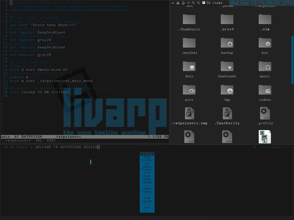

lang fr|gb

ratpoison session
ratpoison is a simple Window Manager with no fat library dependencies, no fancy graphics, no window decorations, and no rodent dependence. It is largely modeled after GNU Screen which has done wonders in the virtual terminal market. All interaction with the window manager is done through keystrokes. ratpoison has a prefix map to minimize the key clobbering that cripples Emacs and other quality pieces of software. ratpoison was written by Shawn Betts.
frames concept
ratpoison uses the concept of panes to place and size windows. Instead of allowing windows to have arbitary shapes at arbitary locations on the screen, the display is divided into panes, the same way a physical window might contain several pieces of glass seperated by wood. In ratpoison, the panes are called frames, and windows are placed in them, maximised. ratpoison starts with one frame, which can be split into an arbitary number of smaller ones. Each frame can be split in half either horizontally or vertically. You can move among them, making different ones the current.
Each frame has at most one window associated with it, which is visible in that frame. If you select a window that is associated with a frame, the focus will move to its associated frame, rather than moving the window to the current frame. If you select a window that is not associated with a frame, that window will be opened in the current frame and resized to fit that frame.
If the window associated with a frame does not fill the frame completely, the various gravity commands control how it is placed.
If no window was open in that frame before the current window was opened, the X root will be visible behind it.
a complete documentation is available in your ~/docs/ratpoison.pdf.
screenshot
{kind=link}
startup
ratpoison is launched from the ~/bin/start/ratpoison_start.sh script.
to change startup applications, simply edit this file:
components
ratpoison session is ultra minimal:
- ratpoison: the window-manager itself, idealy built to work.
- livarp menu: available from top-left corner and handled by fbpanel. it includes a complete menu of installed applications, configuration section and a systray (configurable from ~/.config/fbpanel/default or from the menu itself).
- Menu ratpoison: handled by ratmenu and configurable from the ~/.ratpoison/rat_main_menu file.
configuration
to configure fbpanel, edit its configuration file
if you want to add plugins, please visit the dedicated page.
configure ratpoison with its ~/.ratpoisonrc.
On startup ratpoison looks for ~/.ratpoisonrc and runs it through the command parser. If ~/.ratpoisonrc does not exist, ratpoison tries /etc/ratpoisonrc. This means any command you can bind a key to or run at the command prompt (C-t :) you can execute in this rc file.
You can also use the -f option to specify another startup file, allowing you to switch between different configurations
note that this file is read each time you restart ratpoison “C-t :restart”.
keybindings
ratpoison is fully controllable from the keyboard: control, navigation, frames and clients manipulation...
keybinds can be configured from ~/.ratpoisonrc. here are some shortcuts for livarp_0.4 ratpoison session: (note: keybinds list is available with 'C-t + ?')
menus:
- livarp menu: top-left corner of the screen
- ratpoison menu: C-t + m
- dmenu: C-t + d
control:
- restart ratpoison: C-t : restart
- quit ratpoison: C-t : quit or from livarp menu:exit
windows:
- close client: C-t + k
- previous client: C-t + p
- next client: C-t + n, C-t + space, C-t + Enter
frames:
- previous/next frame: C-t + Tab
- horizontal split: C-t + s
- vertical split: C-t + S
- delete a frame: C-t + R
- delete all frames (back to fullscreen mode): C-t + Q
resizing frames
ratpoison provides a command, resize, that resizes the current frame. It is bound to the key C-t r by default. resize can be used non-interactively by providing two arguments: the number of pixels to grow horizontally and the number to grow vertically. For example, if you wanted to grow the current window by 10 pixels horizontally and shrink it vertically by 50 you could enter the command: resize 10 -50.
When resizing interactively, the following keys are used:
- Grow the frame vertically : C-t r C-p/Up
- Shrink the frame vertically : C-t r C-n/Down
- Grow the frame horizontally : C-t r C-f/Left/Right
- Shrink the frame horizontally : C-t r C-b/Left/Right
- Accept the new frame size : return
- Abort and restore the frame to its original size : C-t r C-g/Esc
launchers:
- default terminal: C-t c
- display shell command dialog: C-t !
- display ratpoison command dialog: C-t :